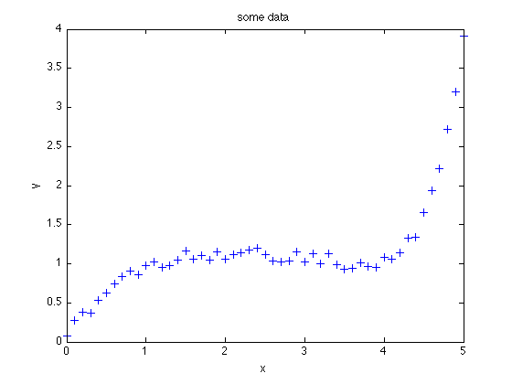
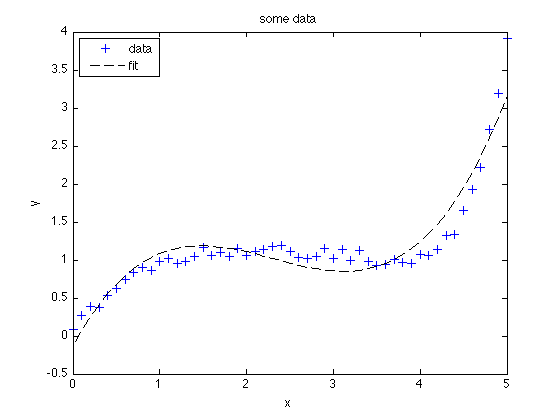

Fitting polynomial to data
Contents
'polyfit'
Assuming that you have a data set x and y which looks like this:
plot(x, y, '+', 'LineWidth', 1.5, 'MarkerSize', 7) xlabel('x'); ylabel('y'); title('some data');
You need to find the best polynomial fit p(x) for y, and you know that the polynomial p(x) must have degree 3. The MATLAB internal function polyfit can help you to find the coefficients of polynomial p(x):
p = polyfit(x, y, 3)
p =
0.1515 -1.0472 2.1072 -0.1305
The result p is a row vector of length 3+1=4 containing the polynomial coefficients in descending powers.
'polyval'
To see how good the fit is, we want to plot p(x); i.e., we need values of the polynomial (with coefficients described in p) evaluated at x. In MATLAB, simply use the function polyval:
yfit = polyval(p, x);
and repeat the plot command:
hold on; plot(x, yfit, 'k--') legend('data','fit','Location','NorthWest')